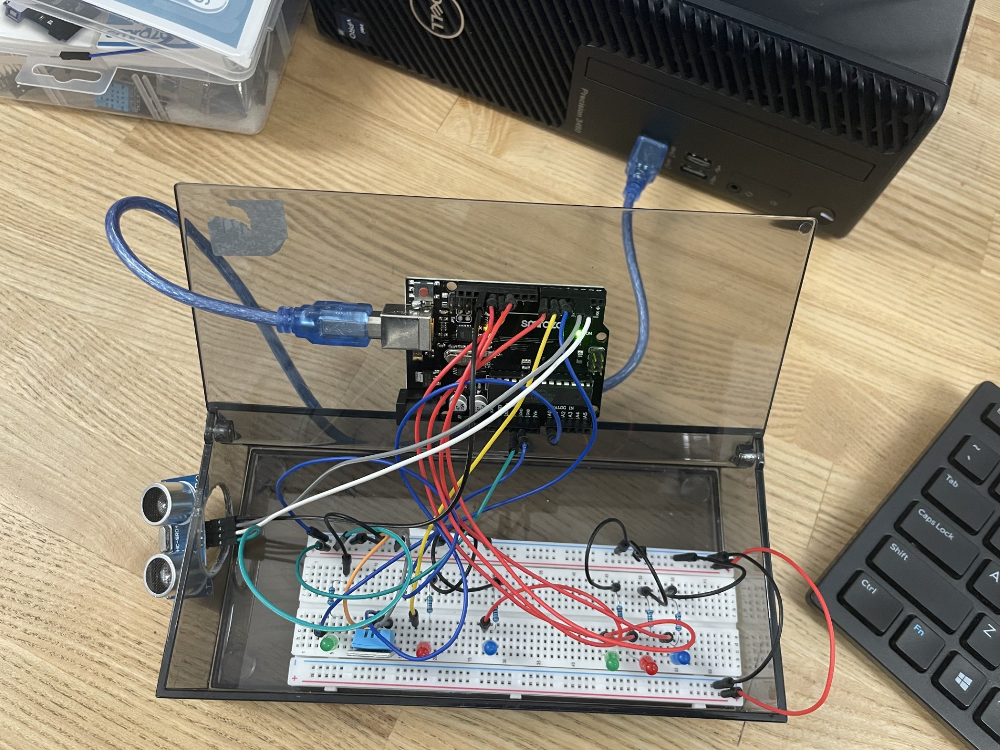

Circuit Diagram
The ultrasonic sensor measures distance; the Arduino activates LEDs and the Temperature and Humidity sensor according to distance thresholds, Then it makes a baseline and tells you if its hot/cold and too/less humid.

Course: TECH 117 (Computer Engineering Technology, Fall 2025)
Instructor: Ph.D. Ana Rodrigues
Team Members:
This project uses an Arduino Uno, an HC-SR04 ultrasonic sensor, a Humidity and Temperature sensor, and red/blue/green LEDs to provide proximity-based Temperature and Humidity readings to your environment, similar to home and office thermostats systems.
The ultrasonic sensor measures distance; the Arduino activates LEDs and the Temperature and Humidity sensor according to distance thresholds, Then it makes a baseline and tells you if its hot/cold and too/less humid.
| Item | Qty | Unit Price (CAD) | Subtotal (CAD) | Source |
|---|---|---|---|---|
| Arduino Uno Rev3 | 1 | $54.00 | $54.00 | Arduino Store |
| HC-SR04 Ultrasonic Sensor | 1 | $7.99 | $7.99 | SparkFun |
| Breadboard | 1 | $12.32 | $12.32 | SparkFun |
| LEDs (Red, Blue, Green) | 6 | $0.48/0.76/1.04 | $2.28 | digikey |
| 220 Ω Resistors | 6 | $0.40 | $2.40 | digikey |
| Humidity & Temperature Sensor | 1 | $5.99 | $5.99 | canadarobotix |
| Jumper Wire Set | 1 | $14.00 | $14.00 | amazon |
| USB Cable | 1 | $16.80 | $16.80 | amazon |
| Estimated Total | $115.78 | — | ||
The following image shows the assembled prototype on a breadboard.
The following Arduino code controls the system lighting LEDs based on distance readings from the HC-SR04 sensor.
// ==== Libraries ====
#include
dht11 DHT11;
#define DHT11PIN A0 // DHT11 data pin
// ==== Ultrasonic Sensor Pins ====
const int TrigPin = 2;
const int EchoPin = 3;
// ==== Humidity LED Output Pins ====
const int greenLED = 11; // Normal humidity (±10%)
const int redLED = 12; // Below 10% of baseline
const int blueLED = 13; // Above 10% of baseline
// ==== Temperature LED Output Pins ====
const int tempNormalLED = 5; // ±3 °C of baseline
const int tempHotLED = 6; // > +3 °C
const int tempColdLED = 7; // < -3 °C
// ==== Variables ====
float humidityPercent = 0;
float tempC = 0;
float baselineHumidity = 0;
float baselineTemp = 0;
float distanceCm = 0;
bool objectIsClose = false;
void setup() {
Serial.begin(9600);
pinMode(TrigPin, OUTPUT);
pinMode(EchoPin, INPUT);
// LEDs
pinMode(greenLED, OUTPUT);
pinMode(redLED, OUTPUT);
pinMode(blueLED, OUTPUT);
pinMode(tempNormalLED, OUTPUT);
pinMode(tempHotLED, OUTPUT);
pinMode(tempColdLED, OUTPUT);
Serial.println("System starting...");
Serial.println("Waiting for object within 50 cm to record baselines...");
}
void loop() {
// ==== Read DHT11 ====
DHT11.read(DHT11PIN);
tempC = DHT11.temperature;
humidityPercent = DHT11.humidity;
// ==== Ultrasonic Distance ====
digitalWrite(TrigPin, LOW);
delayMicroseconds(2);
digitalWrite(TrigPin, HIGH);
delayMicroseconds(10);
digitalWrite(TrigPin, LOW);
distanceCm = pulseIn(EchoPin, HIGH) / 58.0;
// ==== Distance & Baseline Logic ====
if (distanceCm <= 50 && distanceCm > 0) {
if (!objectIsClose) {
objectIsClose = true;
// Record new baselines (take 10 readings)
float humSum = 0;
float tempSum = 0;
for (int i = 0; i < 10; i++) {
DHT11.read(DHT11PIN);
humSum += DHT11.humidity;
tempSum += DHT11.temperature;
delay(100);
}
baselineHumidity = humSum / 10.0;
baselineTemp = tempSum / 10.0;
Serial.println("=== New Baselines Recorded ===");
Serial.print("Humidity Baseline: ");
Serial.print(baselineHumidity);
Serial.println("%");
Serial.print("Temperature Baseline: ");
Serial.print(baselineTemp);
Serial.println(" °C");
Serial.println("==============================");
}
// ==== Humidity LED Logic ====
float lowHum = baselineHumidity * 0.9;
float highHum = baselineHumidity * 1.1;
if (humidityPercent < lowHum) {
digitalWrite(redLED, HIGH);
digitalWrite(greenLED, LOW);
digitalWrite(blueLED, LOW);
}
else if (humidityPercent > highHum) {
digitalWrite(redLED, LOW);
digitalWrite(greenLED, LOW);
digitalWrite(blueLED, HIGH);
}
else {
digitalWrite(redLED, LOW);
digitalWrite(greenLED, HIGH);
digitalWrite(blueLED, LOW);
}
// ==== Temperature LED Logic ====
float lowTemp = baselineTemp - 3;
float highTemp = baselineTemp + 3;
if (tempC < lowTemp) {
digitalWrite(tempColdLED, HIGH);
digitalWrite(tempNormalLED, LOW);
digitalWrite(tempHotLED, LOW);
}
else if (tempC > highTemp) {
digitalWrite(tempColdLED, LOW);
digitalWrite(tempNormalLED, LOW);
digitalWrite(tempHotLED, HIGH);
}
else {
digitalWrite(tempColdLED, LOW);
digitalWrite(tempNormalLED, HIGH);
digitalWrite(tempHotLED, LOW);
}
}
else {
objectIsClose = false;
// Turn LEDs off
digitalWrite(redLED, LOW);
digitalWrite(greenLED, LOW);
digitalWrite(blueLED, LOW);
digitalWrite(tempColdLED, LOW);
digitalWrite(tempNormalLED, LOW);
digitalWrite(tempHotLED, LOW);
}
// ==== Serial Output ====
Serial.println("===== Sensor Readings =====");
Serial.print("Temperature: ");
Serial.print(tempC);
Serial.println(" °C");
Serial.print("Humidity: ");
Serial.print(humidityPercent);
Serial.println(" %");
Serial.print("Baselines → Temp: ");
Serial.print(baselineTemp);
Serial.print(" °C, Humidity: ");
Serial.print(baselineHumidity);
Serial.println(" %");
Serial.print("Distance: ");
Serial.print(distanceCm);
Serial.println(" cm");
Serial.println("===========================");
delay(500);
}
The system effectively demonstrates distance-based mesuring and activation of readings from an temperature and humidity sensor. it effectively reads both the temperature and humidity abd informs you off the differences of the baseline. It’s affordable, educational, and sustainable through reusable components.
The following external resources and example projects demonstrate related Arduino applications using ultrasonic distance sensors, passive buzzers, and multicolour LEDs: